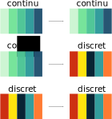

Visualisation de données
3. Échelles et axes
Noemi Romano
noemi.romano@heig-vd.ch
Semaine passée
Syntaxe Lire de données
Manipulation des données .map(), .filter(),.reduce()
Jusqu'à maintenant
Données = Pixels

Dès aujourd'hui
Données = Echelle * Pixels
Echelles
d3.scaleLinear()
Longuers, positions
d3.scaleTime()
Données temporelles
d3.scaleSqrt()
Montrer la différence en Aire plutôt que le rayon des cercles
d3.scaleQuantize()
Couleurs par groupe de donneés
d3.scaleThreshold()
Couleurs par groupe de donneés
d3.scaleOrdinal()
Données qualitatives
d3.scaleBand()
Données qualitatives
d3.scalePoint()
Données qualitatives
.domain() & .range()

Exemple
...
svg.append("circle")
.attr("cx", 10)
.attr("cy", 100)
.attr("r", 40)
.style("fill", "blue");
svg.append("circle")
.attr("cx", 50)
.attr("cy", 100)
.attr("r", 40)
.style("fill", "red");
...
const x = d3.scaleLinear()
.domain([0, 100])
.range([0, 400]);
svg.append("circle")
.attr("cx", x(10))
.attr("cy", x(100))
.attr("r", 40)
.style("fill", "blue");
Axes

Axes
Création
const axe =
d3.axisBottom(echelle)
Dessin
selecteur
.append('g')
.call(axe)
Exemple
const x = d3.scaleLinear()
.domain([0, 100])
.range([0, 400]);
svg.call(d3.axisBottom(x));
svg.append("circle")
.attr("cx", x(10))
.attr("cy", x(100))
.attr("r", 40)
.style("fill", "blue");
Marges & Translations
Marges & Translations
const margin = {top : 10, right: 40, bottom: 10, left: 40},
width = 450 - margin.left - margin.right,
height = 400 - margin.top - margin.bottom;
svg.attr("width", width + margin.left + margin.right)
.attr("height", height + margin.top + margin.bottom)
.append("g")
.attr("transform", "translate(" + margin.left + "," + margin.top + ")");
const x = d3.scaleLinear()
.domain([0,100])
.range([0,width])
svg.append('g')
.attr("transform", "translate(0," + height + ")")
.call(d3.axisBottom(x));
const y = d3.scaleLinear()
.domain([100,0])
.range([height,0])
svg.append('g')
.call(d3.axisLeft(y));
svg.append("circle")
.attr("cx", x(10)).attr("cy", y(60)).attr("r", 40).style("fill", "blue");
svg.append("circle")
.attr("cx", x(50)).attr("cy", y(60)).attr("r", 40).style("fill", "red");
svg.append("circle")
.attr("cx", x(100)).attr("cy", y(60)).attr("r", 40).style("fill", "green");
Marges & Translations
Exercices
Rajouter dossier du cours en upstream
git remote add upstream git@github.com:romanoe/visualdon-22.git
Télécharger changements
git fetch upstream
Mettre à jour
git merge main/upstream